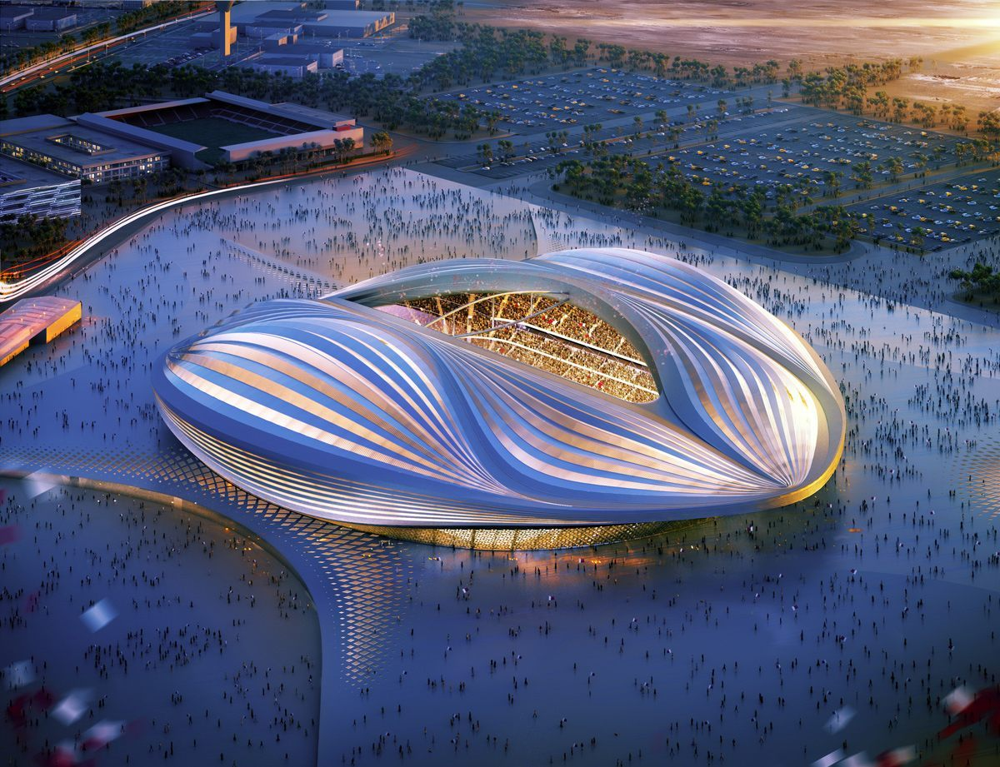
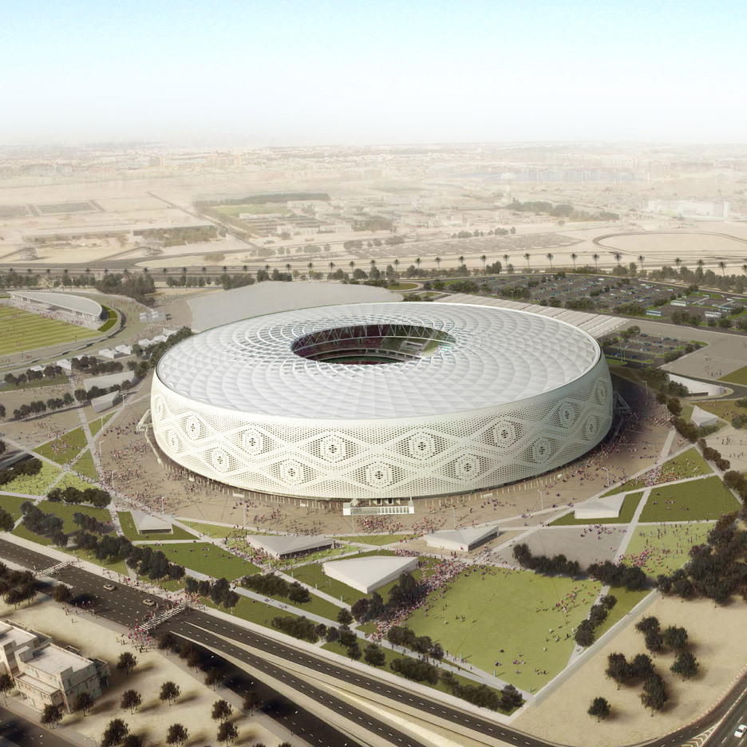

Estádios
São eles:
- Ahmad Bin Ali
Capacidade: 40.000 pessoas
Localização: Al Rayyan
Inauguração: 18 de dezembro de 2020
Jogos:
21/11/2022, às 16h - EUA x País de Gales
23/11/2022, às 16h - Bélgica x Canadá
25/11/2022, às 07h - País de Gales x Irã
27/11/2022, às 07h - Japão x Costa Rica
29/11/2022, às 16h - País de Gales x Inglaterra
01/12/2022, às 12h - Croácia x Bélgica
03/12/2022, às 16h - A definir x A definir (oitavas de final) - Al Janoub
Capacidade: 40.000 pessoas
Localização: Al Wakrah
Inauguração: 16 de maio de 2019
Jogos:
22/11/2022, às 16h - França x Austrália
24/11/2022, às 07h - Suíça x Camarões
26/11/2022, às 07h - Tunísia x Austrália
28/11/2022, às 07h - Camarões x Sérvia
30/11/2022, às 12h - Austrália x Dinamarca
02/12/2022, às 12h - Gana x Uruguai
05/12/2022, às 12h - A definir x A definir (oitavas de final) - Al Thumama Stadium
Capacidade: 40.000 pessoas
Localização: Al Thumama, Doha
Inauguração: 22 de outubro de 2021
Jogos:
21/11/2022, às 13h - Senegal x Holanda
23/11/2022, às 13h - Espanha x Costa Rica
25/11/2022, às 10h - Qatar x Senegal
27/11/2022, às 10h - Bélgica x Marrocos
29/11/2022, às 16h - Irã x Estados Unidos
01/12/2022, às 12h - Canadá x Marrocos
04/12/2022, às 12h - A definir x A definir (oitavas de final)
10/12/2022, às 12h - A definir x A definir (quartas de final) - Education City Stadium
Capacidade: 40.000 pessoas
Localização: Education City, Doha
Inauguração: Junho de 2020
Jogos:
22/11/2022, às 10h - Dinamarca x Tunísia
24/11/2022, às 10h - Uruguai x Coreia do Sul
26/11/2022, às 10h - Polônia x Arábia Saudita
28/11/2022, às 10h - Coreia do Sul x Gana
30/11/2022, às 12h - Tunísia x França
02/12/2022, às 12h - Coreia do Sul x Portugal
06/12/2022, às 10h - A definir x A definir (oitavas de final)
09/12/2022, às 12h - A definir x A definir (quartas de final) - Khalifa International Stadium

Capacidade: 40.000 pessoas
Localização: Doha
Inauguração: 17 de maio de 2017
Jogos:
21/11/2022, às 10h - Inglaterra x Irã
23/11/2022, às 10h - Alemanha x Japão
25/11/2022, às 13h - Holanda x Equador
27/11/2022, às 13h - Croácia x Canadá
29/11/2022, às 12h - Equador x Senegal
01/12/2022, às 16h - Japão x Espanha
03/12/2022, às 12h - A definir x A definir (oitavas de final)
17/12/2022, às 12h - A definir x A definir (disputa do terceiro lugar) - Estádio 974

Capacidade: 40.000 pessoas
Localização: Doha
Inauguração: 30 de maio de 2021
Jogos:
22/11/2022, às 13h - México x Polônia
24/11/2022, às 13h - Portugal x Gana
26/11/2022, às 13h - França x Dinamarca
28/11/2022, às 13h - Brasil x Suíça
30/11/2022, às 16h - Polônia x Argentina
02/12/2022, às 16h - Sérvia x Suíça
05/12/2022, às 16h - A definir x A definir (oitavas de final) - Al Bayt

Capacidade: 60.000 pessoas
Localização: Al Khor
Inauguração: 30 de novembro de 2021
Jogos:
20/11/2022, às 13h - Qatar x Equador (partida de estreia da Copa)
23/11/2022, às 07h - Marrocos x Croácia
25/11/2022, às 16h - Inglaterra x Estados Unidos
27/11/2022, às 16h - Espanha x Alemanha
29/11/2022, às 12h - Holanda x Qatar
01/12/2022, às 16h - Costa Rica x Alemanha
04/12/2022, às 16h - A definir x A definir (oitavas de final)
10/12/2022, às 16h - A definir x A definir (quartas de final)
14/12/2022, às 16h - A definir x A definir (semifinal) - Lusail Stadium
Capacidade: 80.000 pessoas
Localização: Lusail
Inauguração: 9 de setembro de 2022
Jogos:
22/11/2022, às 07h - Argentina x Arábia Saudita
24/11/2022, às 16h - Brasil x Sérvia
26/11/2022, às 16h - Argentina x México
28/11/2022, às 16h - Portugal x Uruguai
30/11/2022, às 16h - Arábia Saudita x México
02/12/2022, às 16h - Camarões x Brasil
06/12/2022, às 16h - A definir x A definir (oitavas de final)
09/12/2022, às 16h - A definir x A definir (quartas de final)
13/12/2022, às 16h - A definir x A definir (semifinal)
18/12/2022, às 12h - A definir x A definir (final da Copa do Mundo)